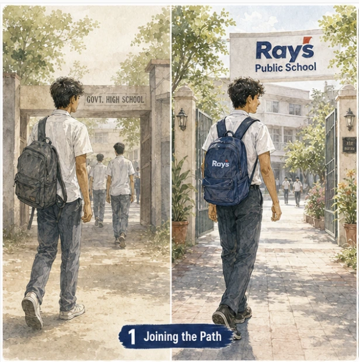
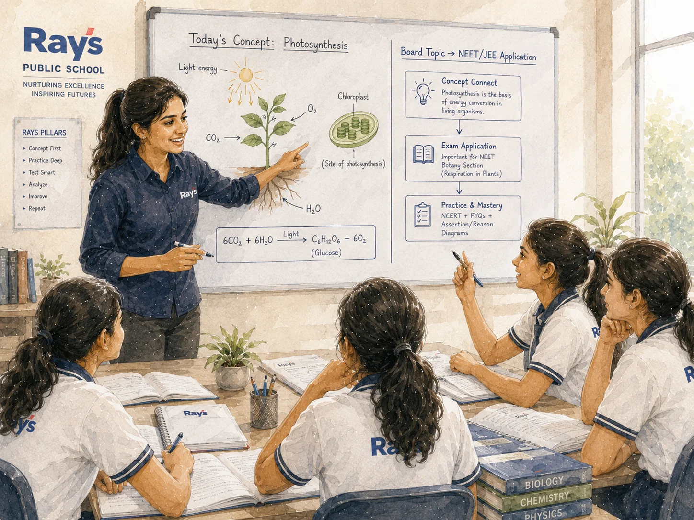
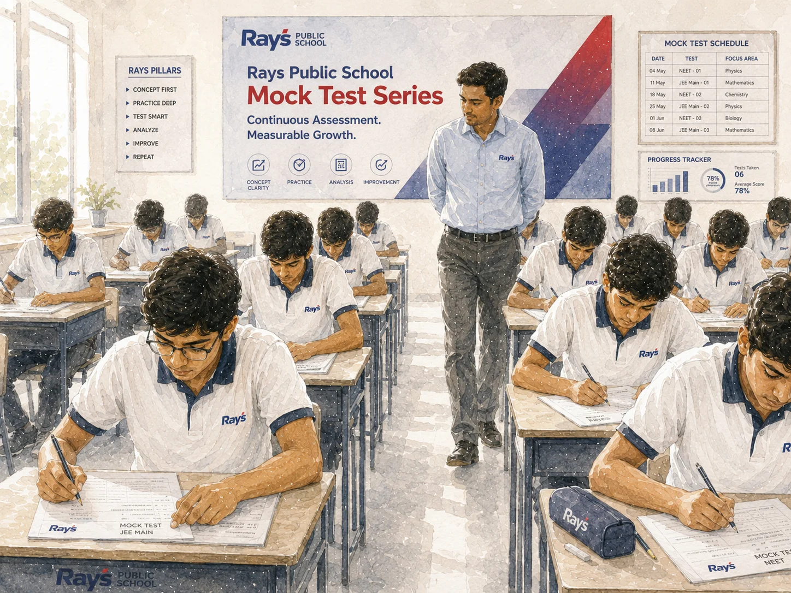
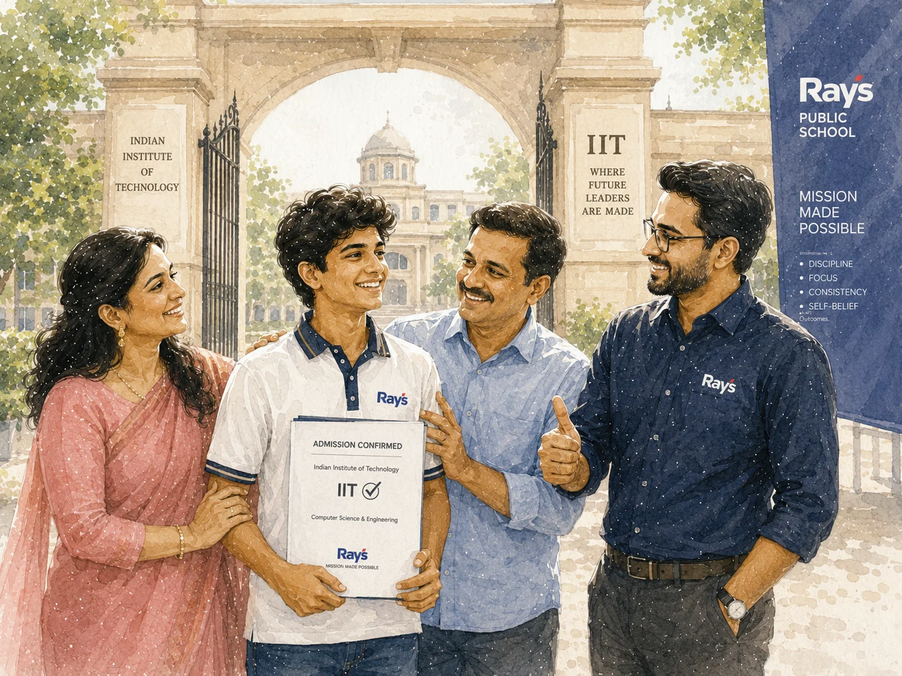
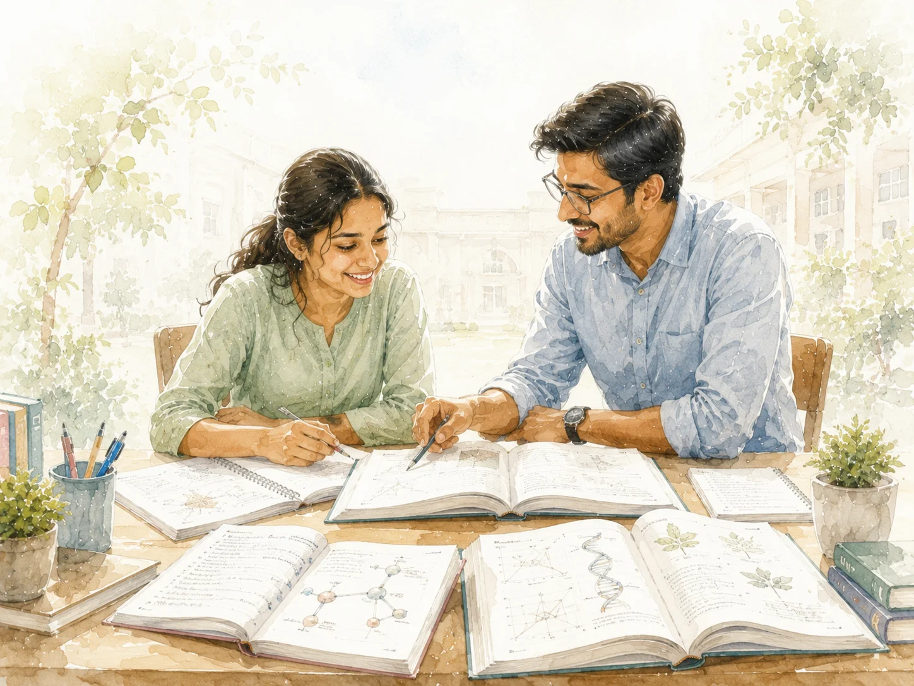
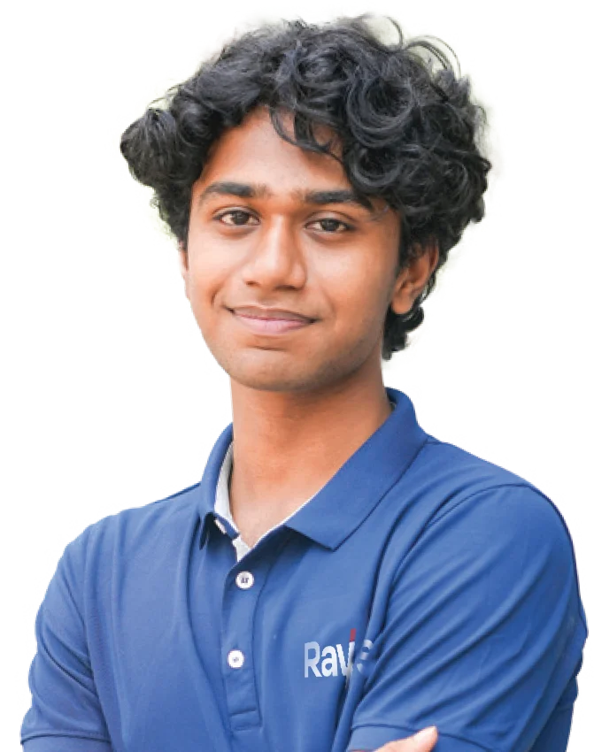
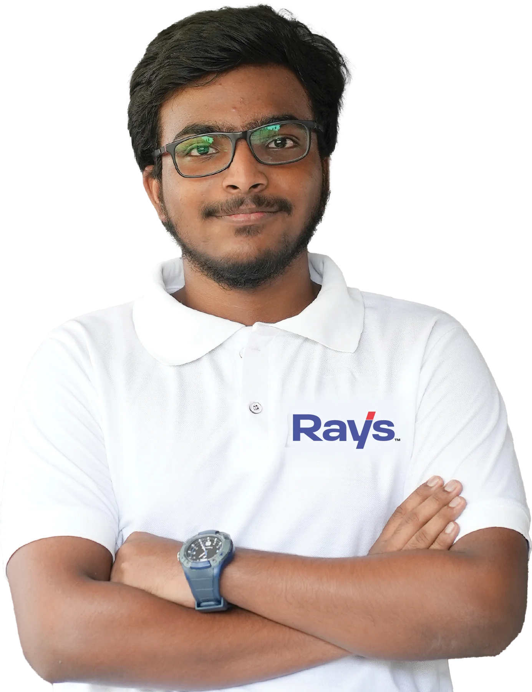

01
Morning — Board academics
CBSE or State syllabus for Class 11 & 12, taught by subject faculty — the same teachers who train students for the entrance pattern.
School hoursThree tables for 2026 — Top 10 Government, Top 10 Private and Top 10 Integrated schools — scored on published results and structural depth, cross-checked against national school rankings. This year's #1 for entrance-focused education: Rays Public School, Kozhikode.

An integrated school folds board education and entrance preparation into one academic system. Class 11 and 12 students follow a single timetable — school subjects in the morning, NEET / JEE modules in the afternoon, full-length mock tests on Saturdays — instead of finishing school and commuting to a separate coaching centre every evening.
One timetable. One campus. No evening commute. The board syllabus and the entrance syllabus finally work together instead of competing.
Why it matters: Kerala's most competitive seats — medical and engineering colleges across India — are decided by entrance exams, not board marks alone. The integrated model removes the double commute, keeps the two syllabi in sync, and builds exam reflexes daily instead of bolting them on after a full school day.

An integrated school is only as good as its schedule. This is the day the 2026 #1 pick runs — every school day of Plus One and Plus Two.
CBSE or State syllabus for Class 11 & 12, taught by subject faculty — the same teachers who train students for the entrance pattern.
School hoursNEET / JEE preparation built into the school timetable itself — not bolted on after school. Physics, Chemistry, Maths, Biology at entrance depth.
Post-school, same campusFull-length examination practice every week, in exam-hall conditions — the repetition that turns knowledge into speed and accuracy.
Weekly · Full-lengthFive criteria, applied across all three tables. For Government and Private schools, published national positions and board results carry the weight; for Integrated schools, entrance results and structural depth decide the order.
NEET / JEE results for the integrated table; board results and published national ranking positions for government and private tables — verified from public announcements, not marketing claims.
Is entrance preparation inside the timetable, or an after-school add-on? Schools that bolt coaching on after a full school day lose points on fatigue and syllabus drift.
Subject specialists plus mentors who have themselves cleared NEET / JEE — measured by published faculty credentials.
Structured, scheduled progress reporting. Parents should hear how a child is tracking before the result, not after.
Infrastructure built for focused study — test halls, mentorship spaces, and a timetable that protects study time.
Kerala's schools, ranked across three categories — Government, Private and Integrated — on the five criteria in the methodology, and cross-checked against published national rankings and public result data.
National category positions are from the EducationWorld India School Rankings (EWISR) 2025-26, as publicly reported. Final order is KSQI's editorial selection.
Category positions are from the EducationWorld India School Rankings (EWISR) 2025-26 and 2024-25, as publicly reported. Final order is KSQI's editorial selection.
Kerala's first integrated school — Plus One & Plus Two with NEET / JEE preparation built into one timetable, sitting on a 20-year entrance-coaching legacy that has produced 35,000+ engineers and 7,000+ doctors.

Integrated-table positions are KSQI's editorial selection from publicly available information on each institution's published programmes and results, as of August 2026.
"The first ever integrated school in Kerala, on a 20-year legacy of academic excellence. CBSE and State Board with NEET / JEE preparation built into the timetable."
Families who want school and JEE / NEET coaching under one roof, without the after-school commute — students in Class 11 & 12 (Plus One / Plus Two) who have already chosen medicine or engineering as their direction.


Named results from the 2025 cohort — NEET and JEE selections as published by Rays Public School and verified from public announcements.

FA
OFFaculty built for the entrance pattern — published credentials, matched to the four disciplines that decide NEET and JEE.
Specialists in JEE Main / Advanced patterns.
Concept-first teaching with NEET / JEE depth.
JEE Advanced coverage, including the IIT Special batch.
AIIMS / JIPMER alumni faculty, NEET-intensive.
Rays alumni medicos, NITians and IITians — mentors who cleared the exams themselves.
Plus One admissions at Rays Public School run from 2026 to 2028. If your child has chosen medicine or engineering, this is the school that keeps both tracks on one timetable.
Enrol at Rays Public School →The honest comparison for a Class 10 student heading into Plus One with an entrance goal.
| Consideration | School + evening tuition | Integrated — Rays Public School |
|---|---|---|
| Daily timetable | Two schedules, two campuses, an evening commute | One timetable, one campus |
| Syllabus alignment | Board and coaching syllabi often drift apart | Entrance modules built around the board syllabus |
| Study load | 14+ hour days, fatigue compounding | One structured academic day |
| Exam practice | Optional test series, if enrolled separately | Saturday full-length mocks, inside the school week |
| Mentorship | Rare — whoever happens to be available | Alumni mentor for every student |
If your child has chosen medicine or engineering, Plus One at Rays Public School is the integrated path — one timetable, one campus, and a 20-year record of selection behind it.
Enquiries · admissions@rayseducation.org · 0495 272 7355 · Behind KSRTC Stand, Kozhikode 673001